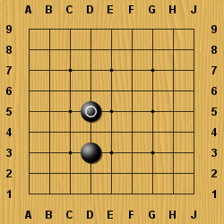
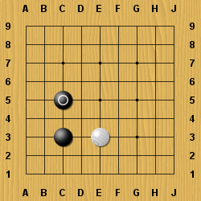
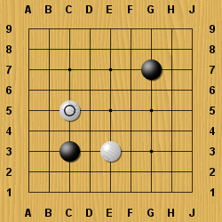

Съдържание
СъдържаниеСега ще научите как да играете, когато белите и черните камъни не се атакуват директно едни други.
Това е времето за да подсилите вашите позиции, готвейки се за бъдеща атака и правейки малко територия.
 Тоци ход (D5) е единичен скок( или иккен тоби).
Камъка D5 е почти свързан с D3. По този начин, този ход може да се използва за различни цели - атака, защита, бягане.
Една Го поговорка гласи: Няма един единичен скок, който е лош ход.
Просто направете единичен скок, ако нямате и на идея къде да играете.
 Ако белият играе камък близо до ваша позиция, единичният скок е доста предпочитан отговор.
Този ход защитава камъка ви C3
 Ако не обърнете внимание на нападащият камък E3 и играете, някъде другате - G7, Камакът ви C3 може да бъде атакуван и от двете страни.
 Следващ урок
Следващ урок Начало
Начало